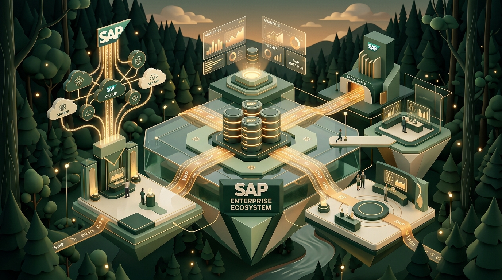

Student feedback videos
Hear directly from SV CurioTech learners about trainer guidance and practical learning.
Master enterprise SAP ABAP programming through practical coding, SE11 Data Dictionary modeling, and modern S/4HANA architecture guided by dedicated industry mentors.

Skill-first mentorship tailored for Bangalore tech and consulting opportunities
ABAP (Advanced Business Application Programming) is the programming foundation behind SAP ERP and modern S/4HANA systems, powering business logic and data transactions globally.
User interfaces where operators trigger business tasks, generate reports, and review analytics.
Processes core business logic, executes custom reports, manages dictionary structures, and runs RAP models.
High-speed in-memory columnar database holding relational enterprise records and Core Data Services views.
Understand enterprise system architecture, navigation in the SAP GUI, and how ABAP development tools fit within SAP S/4HANA.
*Curriculum Verification Advisory: Specific advanced areas such as CDS views and ABAP RAP depend on the chosen training program. Verify your selected syllabus with our instruction unit prior to enrolment.
Write clean ABAP programs in SE38 and Eclipse ADT, working with work areas and internal tables.
Set dynamic breakpoints, inspect runtime dumps (ST22), analyze call stacks, and fix syntax errors.
Extract and present live enterprise data via classical selection screens and ALV grid displays.
Extend standard SAP logic safely using customer exits, BAdIs, and modular function modules.
Premier hub for leading SAP consultancies, enterprise GCCs, and systems integrators.
Master syntax formulation, error detection, and runtime debugging rather than abstract theory.
Build custom reports and interfaces that drive critical business logistics and financial decisions.
Tailored learning pathways whether you are entering enterprise IT or upgrading your consulting skillset.
Designed for CS, IT, and engineering graduates. Progress from programming logic to Data Dictionary modeling, ALV reports, and interview preparation.
Builds custom reports, validates data interfaces, and maintains dictionary structures for enterprise clients.
For software developers with Java, C#, or Python experience looking to pivot into enterprise SAP architecture and in-memory HANA programming.
Designs in-memory CDS views, OData services, and mission-critical business application logic.
For SAP FICO, MM, SD consultants who want to debug custom code, write specifications with technical precision, and understand backend table structures.
Bridges the gap between business processes and technical code execution with debugging mastery.
For professionals from non-technical backgrounds wanting to enter the enterprise software industry through structured, mentor-led practice.
Provides technical analysis, support, and customized reporting for SAP client systems.
Flexible schedules structured for students and working professionals across Bangalore:
Explore learner milestones, feedback videos, Google review highlights, and the enterprise ecosystem where SAP skills are valued.


Hear directly from SV CurioTech learners about trainer guidance and practical learning.
Independent learner feedback from our public Google review profiles.
The practical sessions helped me build confidence and improve my skills.Pavitra Angadi · SAP FICO Learner ★★★★★
Practical examples and hands-on training helped me build confidence.Swathi L · SAP MM Learner ★★★★★
Excellent SAP training with practical sessions and expert guidance.Tilak G · SAP SD Learner ★★★★★
The SAP FICO online classes were interactive and easy to follow, with practical implementation knowledge.Bhoomika Talawar · SAP FICO Learner ★★★★★
Hands-on practice and interview preparation were very helpful throughout the SAP FICO training.T Prakash · SAP FICO Learner ★★★★★
The classes were organised, practical and focused on real-world business processes.Naveen Kumar · SAP MM Learner
Short, direct answers to common queries regarding SAP ABAP training at SV CurioTech.
Yes. Beginners can start with basic programming and progress step-by-step through internal tables, databases, and reporting.
No. Prior coding helps, but beginners can start from scratch with fundamental concepts and practice.
Duration depends on your selected syllabus and batch schedule (weekday/weekend). Contact SV CurioTech for current batch timings.
Yes. ABAP remains the core development language in SAP, alongside modern CDS views and the RAP model.
Yes, though it requires dedicating extra time to mastering programming logic and fundamentals.
Yes. Training focuses on practical code execution, debugging, SAP system access, and realistic scenarios.
Yes. We provide career guidance, technical interview prep, and profile support based on your skills.
Reach out via WhatsApp, phone (+91 6361702540), or the enquiry form to get schedule and enrolment details.
Connect directly with our course coordinators in Bangalore to get syllabus schedules, fee transparency, and upcoming batch details.
Share your details and the SV CurioTech team will help you understand the current syllabus, batch schedule, practical-learning options, and fees.
Our coordinator will respond with the latest batch details.